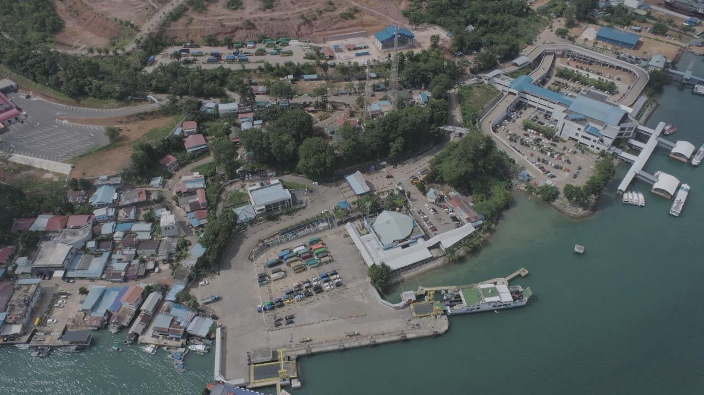

Info Operasional
29 Oktober 2026
Dukung Stimulus Pemerintah, ASDP Bebaskan 100% Tarif Jasa Kepelabuhanan pada Nataru 2026/2027
Guna mendukung mobilitas masyarakat selama libur Natal dan Tahun Baru 2026/2027, ASDP menghadirkan pembebasan 100% tarif jasa kepelabuhanan di lintasan strategis nasional.